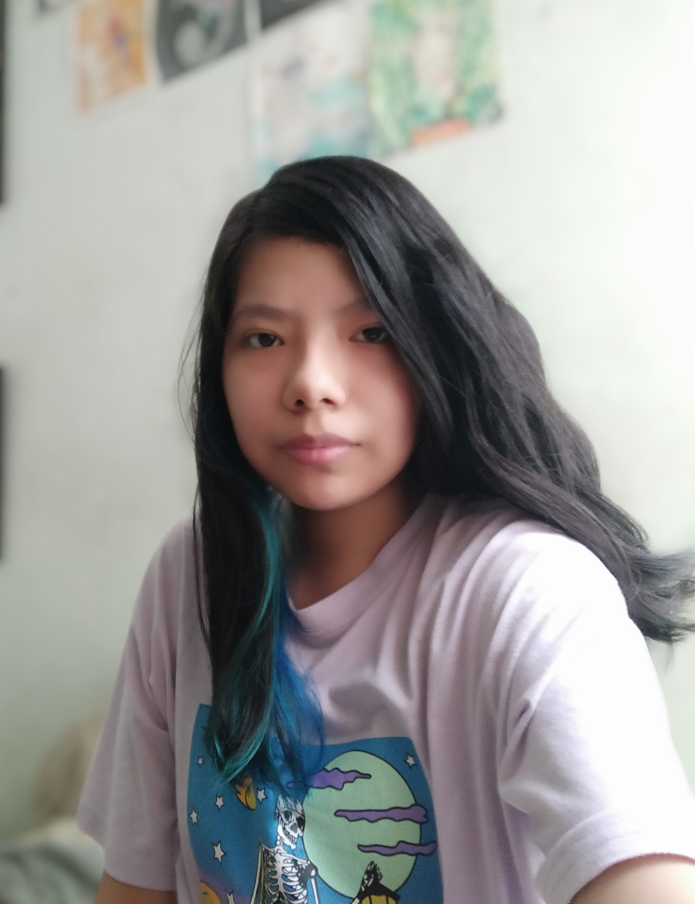

Edlyn Cuanalo Rocha
¡Hola! Me llamo Edlyn Cuanalo Rocha, tengo 22 años y soy originaria de Villahermosa, Tabasco. Me defino como una persona calmada y tranquila. Actualmente vivo con mi mamá, aun así, en celebraciones importantes me gusta pasar tiempo con el resto de mi familia. Estoy estudiando la licenciatura de Diseño Gráfico en la Benemérita Universidad Autónoma de Puebla (BUAP). Mis pasatiempos favoritos son escuchar música y sobre todo ilustrar, especialmente combinarlo con la animación. A pesar de que no tengo mascotas por falta de espacio, mi animal favorito son los gatos. Le temo a la oscuridad y multitudes.